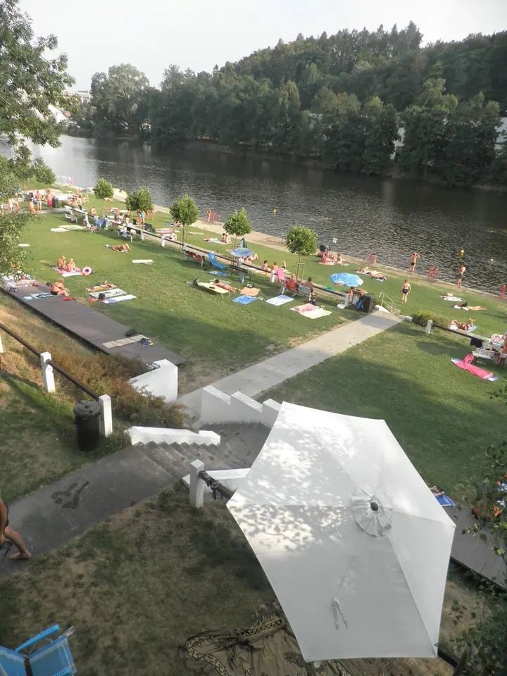
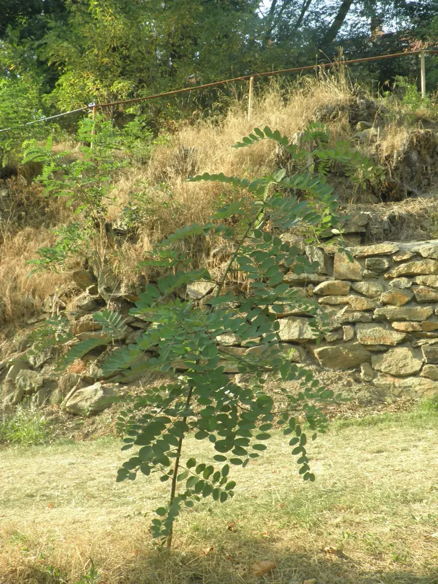
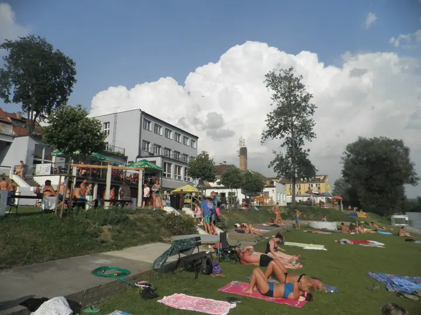

01 / 01
Reportážní a dokumentární fotografie
Jako novinář a fotograf zachycuji obyčejný život kolem sebe: lidi u vody, sport, letní odpoledne ve městě. Fotky skládám do alb, která vyprávějí celý den.
Zeptat se na termín→


Obyčejné léto v Písku zblízka
Zeptat se na termín →(01) Ahoj
Jmenuji se Pavel Král a fotím to, co se v Písku kolem mě děje . Letní odpoledne na břehu řeky , nohejbal na antukovém hřišti i lidi, kteří si prostě užívají volno. Jsem novinář, umělec, performer a fotograf.
(02) Co fotím
01 / 01
Jako novinář a fotograf zachycuji obyčejný život kolem sebe: lidi u vody, sport, letní odpoledne ve městě. Fotky skládám do alb, která vyprávějí celý den.
Zeptat se na termín→(04) Postup
Od první zprávy po hotovou galerii.
Krok 1 z 4
Napište mi e-mail nebo zavolejte a krátce popište, co byste chtěli nafotit.
Krok 2 z 4
Společně probereme místo, termín a co má na fotkách být.
Krok 3 z 4
Fotím nenápadně a reportážně, aby lidé zůstali sami sebou.
Krok 4 z 4
Vybrané snímky vám předám v albu, podobně jako je najdete v mém portfoliu.
Léto se nejlíp fotí u vody.
(05) Za objektivem
Fotografii beru jako součást své novinářské a umělecké práce. Nejvíc mě baví obyčejné chvíle, které by jinak nikdo nezaznamenal: kdo se kde opaluje, kdo pádluje po řece, kdo zrovna vyhrává na antuce.
Žiju v Písku a většinu svých fotek nosím odsud. Za ty roky jsem na Rajčeti nasbíral přes 170 alb a víc než tři a půl tisíce fotek, takže si můžete prohlédnout, jak se na svět dívám.
Když chcete něco podobného zachytit i u vás, napište mi nebo zavolejte. Domluvíme se, co a kde budeme fotit.
Pavel
Pavel Král · Novinář, umělec a fotograf
Hlavně v Písku a okolí, kde žiju. O jiných místech se můžeme domluvit.
Na mém profilu na Rajčeti mám 173 alb s fotkami z různých míst a akcí.
E-mailem nebo telefonicky, kontakt najdete níže na stránce.
Termín předání se odvíjí od rozsahu focení, domluvíme ho předem.
(07) Kontakt
Napište pár vět o tom, co si představujete, a termín, který se vám hodí.
posledni_bohem@seznam.cz